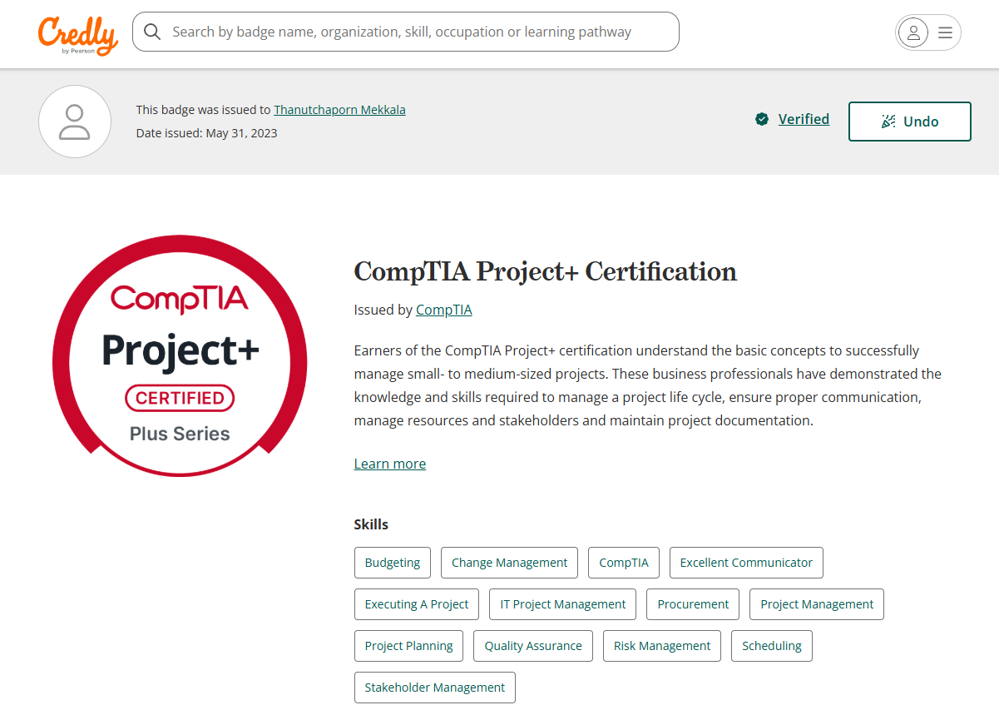
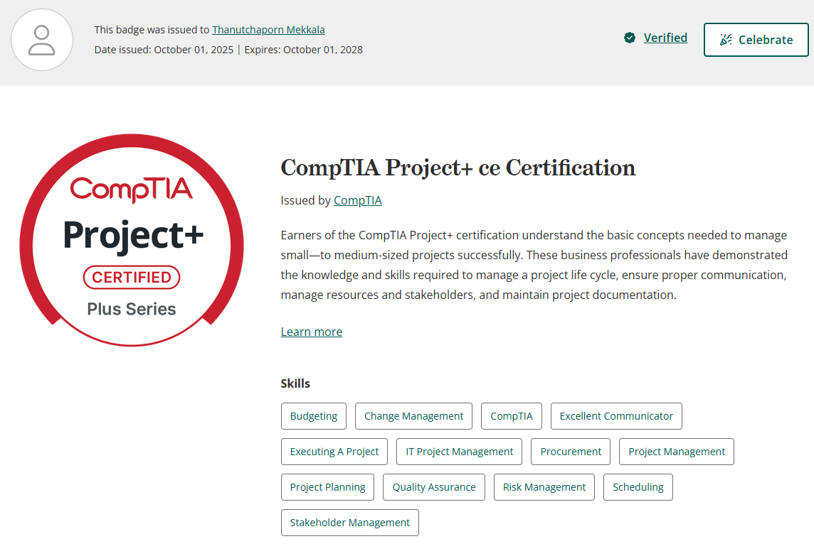
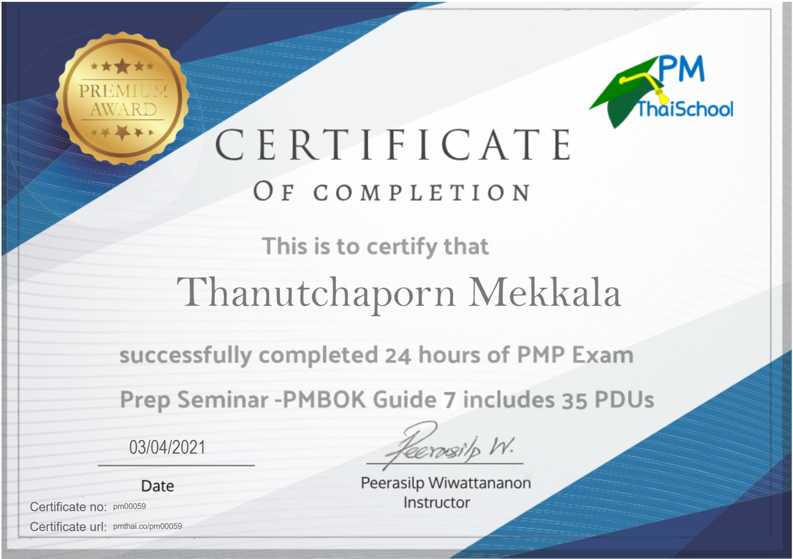
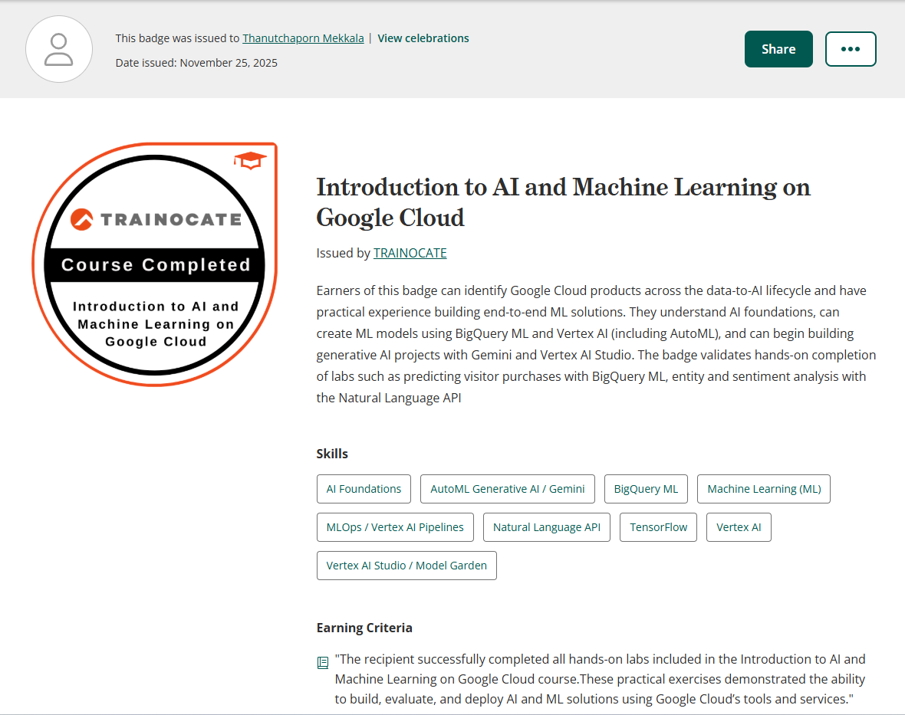
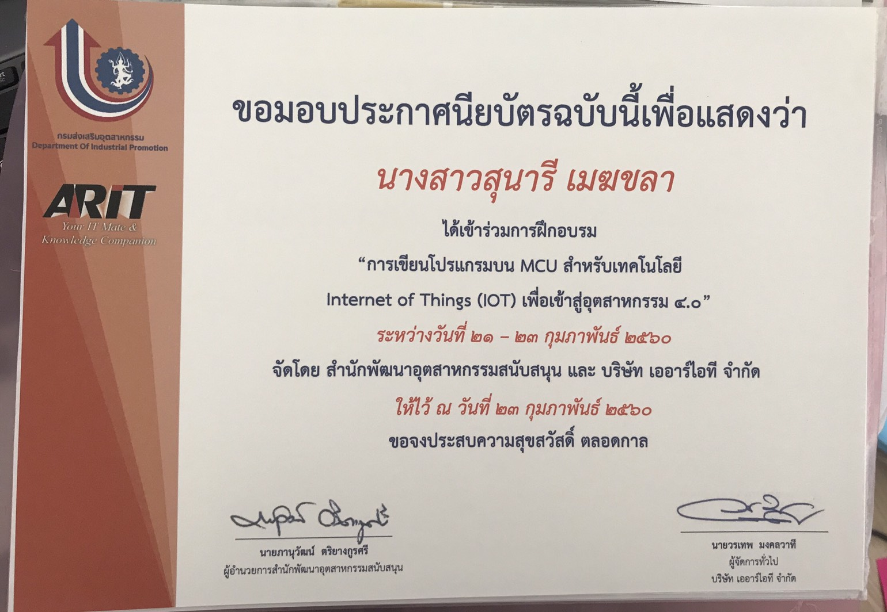
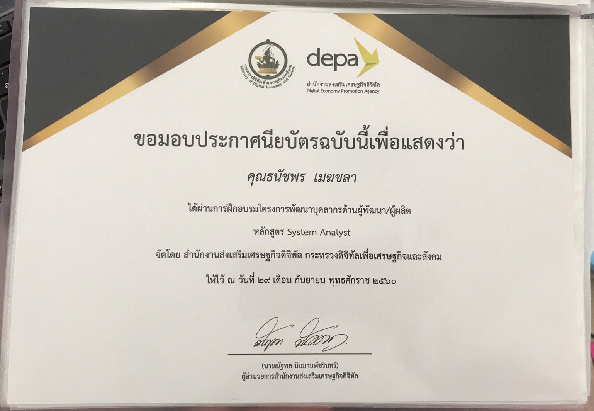
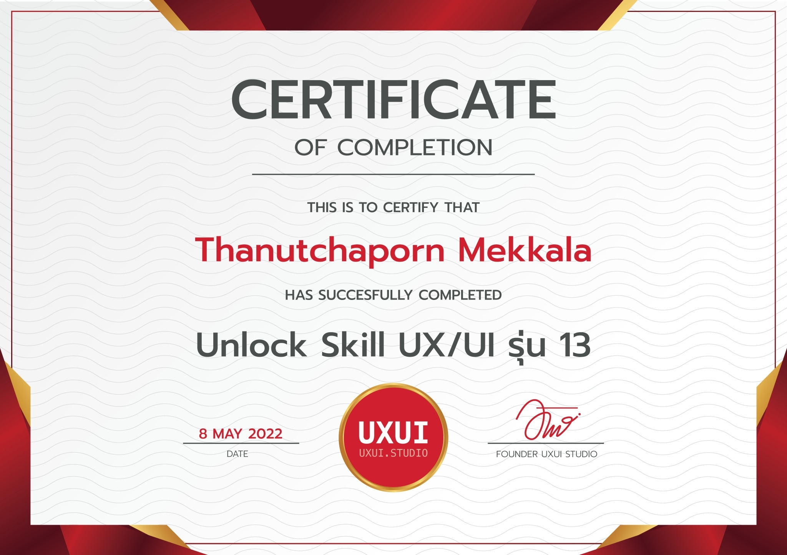
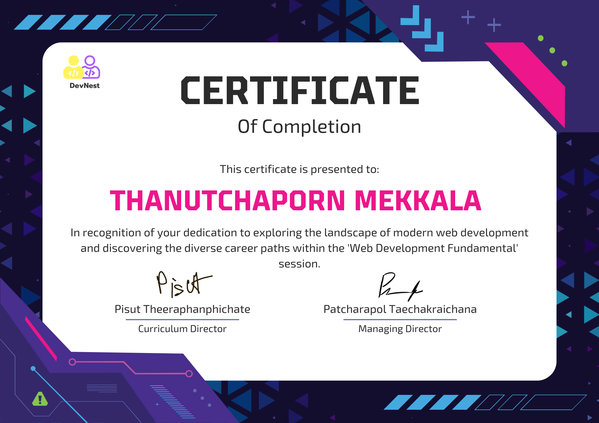
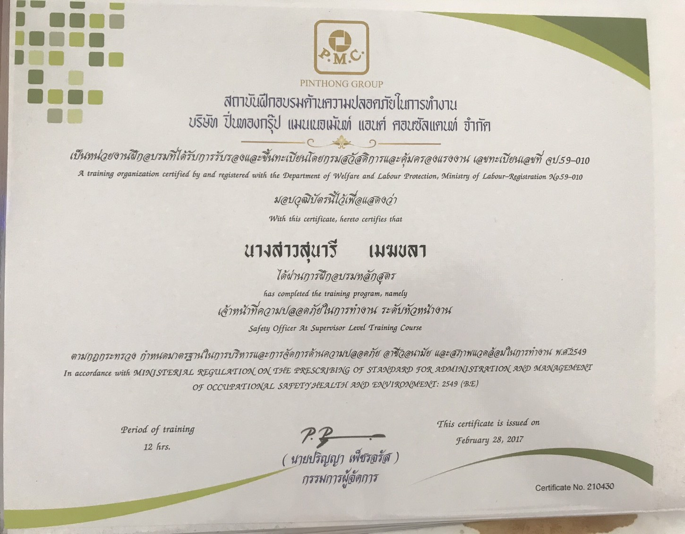

COMPTIA
CompTIA Project+ Certification
Project lifecycle, communication, resources, stakeholders, documentation, risk, quality, and scheduling.
Project ManagementRiskQuality
A curated record of professional certifications, technical badges, and specialist training across project delivery, AI, cloud, data, business analysis, networks, and digital product development.

Project lifecycle, communication, resources, stakeholders, documentation, risk, quality, and scheduling.

Continuing-education credential validating current project management knowledge and practice.

Project Management Professional examination preparation seminar, including 35 PDUs.
Professional development in structured project planning, control, and delivery.
Investment-project analysis and management program delivered by Chulalongkorn University.

Hands-on AI foundations using BigQuery ML, Vertex AI, AutoML, Gemini, and natural-language services.
Foundational artificial-intelligence knowledge and practical awareness for modern work.
Core cloud concepts, AWS services, security, architecture, pricing, and support.
AI-enabled productivity and practical Copilot use across the Microsoft 365 ecosystem.
Business-intelligence concepts for transforming operational data into decision-ready information.
Dashboard development, reporting, data modeling, and business visualization.
Requirements discovery, stakeholder alignment, process analysis, and solution definition.
Network architecture, protocols, IP addressing, Ethernet, and foundational router and switch configuration.
LAN switching, inter-VLAN routing, wireless networks, and network operations.
Enterprise network architecture, security, WANs, virtualization, automation, and programmability.

Practical microcontroller programming for IoT applications in Industry 4.0.

System analysis training for translating operational needs into structured technology solutions.
Interface design, visual hierarchy, components, prototyping, and collaborative design using Figma.

User-experience and interface-design foundations for creating clear, usable digital products.

Foundational exploration of modern web development and related technology career paths.
Professional-development program supporting leadership, management, and organizational perspective.

Supervisor-level occupational safety, health, environment, and workplace responsibility training.
No credentials match your search.